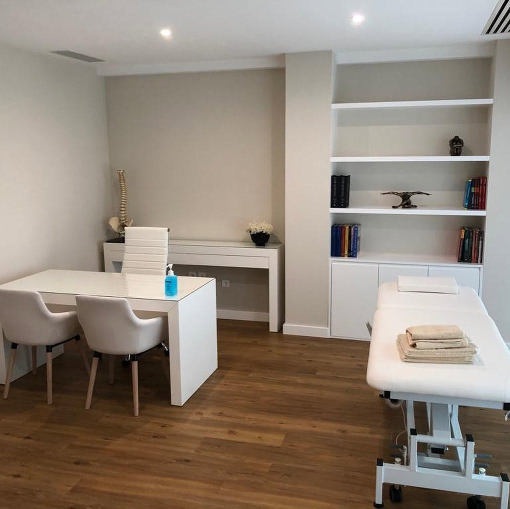
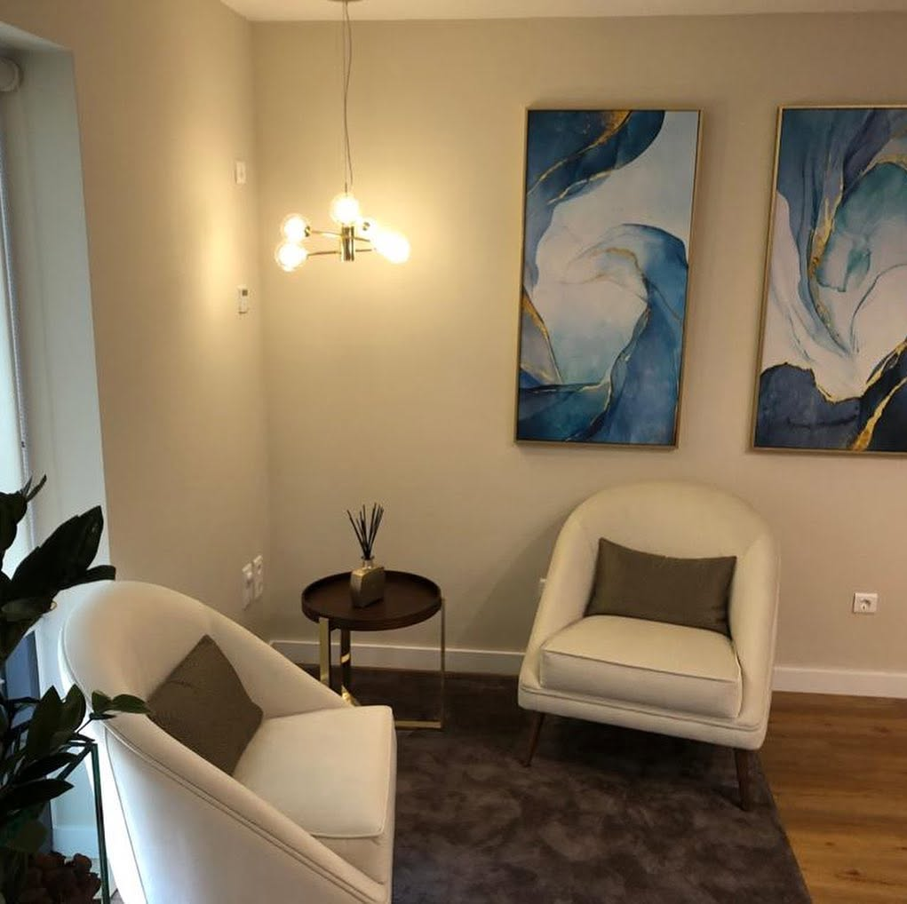
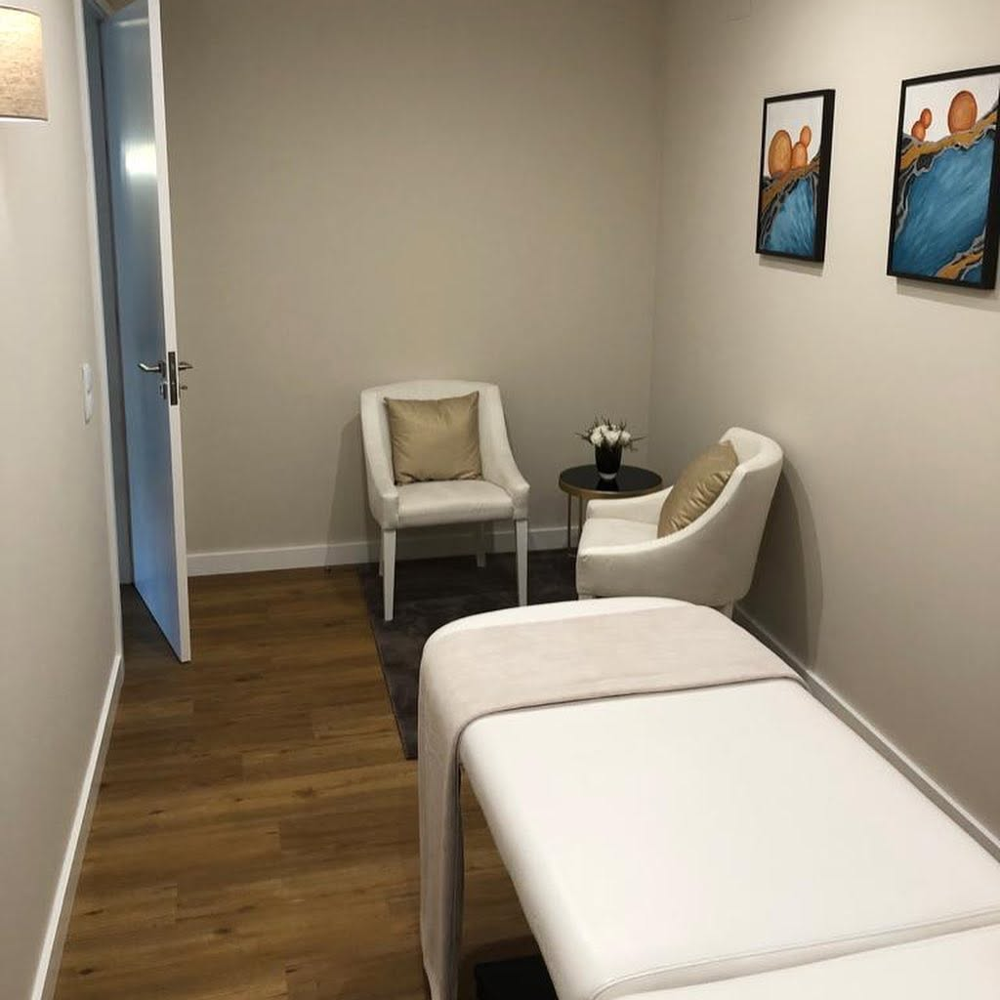

Fisioterapia Músculo-Esquelética
Dor lombar e cervical, tendinopatias, entorses, lesões articulares e musculares. Recupere mobilidade e função.
Clínica de Fisioterapia · Ermesinde
Fisioterapia avançada e personalizada num espaço pensado para o seu conforto. Cada plano é desenhado à sua medida — para que volte a mover-se sem dor, com confiança.

Saúde por Excelência
é mais do que um slogan — é a forma como trabalhamos.
A Clínica
A FisioPrestige é um centro de saúde em Ermesinde dedicado à prestação de cuidados de fisioterapia avançada e personalizada, complementados por terapias integrativas. Acreditamos que cada pessoa é única — e que a recuperação também deve ser.
Sob a direção técnica do fisioterapeuta Nuno Talaia, trabalhamos exclusivamente por marcação, garantindo tempo, atenção e privacidade em cada sessão.
Serviços
Combinamos técnicas de fisioterapia baseadas na evidência com terapias complementares para tratar a causa — não apenas os sintomas.
Dor lombar e cervical, tendinopatias, entorses, lesões articulares e musculares. Recupere mobilidade e função.
Prevenção e tratamento de lesões desportivas, com regresso progressivo e seguro à prática.
Acompanhamento após cirurgias ortopédicas — próteses, ligamentoplastias, fraturas — em cada fase da recuperação.
Mobilizações articulares, libertação miofascial e massagem terapêutica para aliviar a dor e a tensão.
Acupunctura e terapias integrativas como complemento ao tratamento, no controlo da dor e do bem-estar.
Programas de exercício orientado para fortalecer, corrigir a postura e prevenir recidivas.
Não sabe qual o tratamento indicado para si?
Agendar avaliaçãoA Nossa Abordagem
Escutamos a sua história e realizamos uma avaliação física completa para perceber a origem do problema.
Definimos consigo objetivos realistas e um plano de tratamento adaptado ao seu dia a dia.
Sessões individuais que combinam terapia manual, exercício e terapias complementares.
Damos-lhe as ferramentas para manter os resultados e prevenir novas lesões.
“Cuidar com rigor, tratar com humanidade. Na FisioPrestige, a excelência mede-se pela qualidade de vida que devolvemos a cada paciente.”
O Espaço
Um ambiente calmo, luminoso e reservado — porque a recuperação começa no momento em que entra.


Perguntas Frequentes
Não é obrigatória para uma consulta de avaliação em fisioterapia. Se tiver relatórios ou exames, traga-os — ajudam-nos a conhecer melhor o seu caso.
A primeira consulta inclui uma conversa sobre o seu historial, uma avaliação física e, sempre que possível, o início do tratamento. No final explicamos-lhe o plano proposto.
Depende do tratamento, mas as sessões são individuais e com tempo dedicado. Indicamos a duração no momento da marcação.
Roupa confortável que permita expor ou mobilizar a zona a tratar, e quaisquer exames ou relatórios médicos que tenha.
Contacte-nos por telefone ou email para confirmar as condições disponíveis para o seu seguro ou subsistema de saúde.
Marcação
Atendimento exclusivamente por marcação. Deixe-nos o seu contacto e respondemos com a maior brevidade — ou ligue-nos diretamente.
22 404 8924 Chamada para a rede fixa nacionalContactos